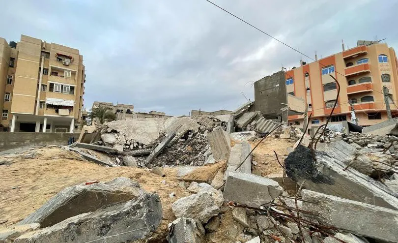

My Vocabulary Page
rubble n(u) //
the piles of broken stone and bricks that are left
when a building falls down or is destroyed
1/ "I see a lot of rubble in Gaza."
2/ There were piles of rubble everywhere.
the rubble of something
3/ "I see Bisan saying hello from the rubble of Gaza."
4/ "Some 7,000 people are still missing under the rubble of the Gaza Strip."
5/ "Dozens of bodies have reportedly been found in the rubble of Gaza City
in the midst of Israel's latest offensive there."
reduce something to rubble
6/ The bomb reduced the houses to rubble.
7/ "My school is reduced to rubble."
8/ "After 120 years, Arnold School is reduced to rubble."
9/ "One of the best schools in Gaza was reduced to rubble,
and much of the Al Quds hospital in Gaza City was burned out."
bury somebody/something in rubble
10/ "Thousands of bodies lie buried in rubble in Gaza."
11/ "Dozens of people are believed to be buried in rubble after
an Israeli attack on a school in Gaza."
12/ "Cars are buried in rubble in the aftermath of the September 11 attacks."
live in rubble
13/ "Life goes on even if we live in rubble."
14/ "One year later, Gaza’s people still live in rubble,
and the world has broken its promises about rebuilding the enclave."
ruin v(t) //
spoil or destroy something completely
ruin something
1.1/ The bad weather ruined our trip.
1.2/ She has ruined everything.
1.3/ It would be a shame to ruin such a beautiful place.
1.4/ Huge modern hotels have ruined this once unspoilt coastline.
be/get ruined (by something)
1.5/ The crops were ruined by the late frost.
1.6/ My new shoes got ruined in the mud.
1.7/ "Which movies got ruined by the characters?"
ruin somebody's chance
1.8/ "You ruined my chance of romance today."
1.9/ Her injury ruined her chances of winning the race.
1.10/ "Have i ruined my chance of a relationship with this girl?"
ruin your health
1.11/ "Stress has ruined my health."
1.12/ Years of drinking had ruined his health.
ruin a dream
1.13/ "The pandemic ruins my dream of working abroad."
1.14/ "My disability ruined my dream of replacing Messi."
ruin a plan
1.15/ "Nothing ruins your plan for a day at the beach like realizing
you forgot your beach bag!"
1.16/ "Now that we know she's a girl, it kind of ruins my plan for Wally Wolowitz."
ruin a surprise
1.17/ "You ruin the surprise every year."
1.18/ "Did you ruin one? Or did someone ruin a surprise for you?"
1.19/ "I will let you discover the differences on your own
since I don't want to ruin the surprise."
see also: spoil, damage, destroy
v(t) make somebody/something lose all their money, their position, etc.
ruin somebody
2.1/ If there's a scandal I'll be ruined!
2.2/ "Your love ruins me and hurts me."
2.3/ The long legal battle ruined him financially.
ruin something
2.4/ The country was ruined by the war.
2.5/ Cheap imported goods are ruining many businesses.
2.6/ They accused the government of ruining the economy.
ruin somebody's reputation
2.7/ "Social media websites can ruin reputation."
2.8/ "You ruined your reputation, and now people despise you or avoid you."
2.9/ "I can ruin my own reputation in five minutes. I don't need help."
2.10/ "How do I forgive the people who ruined my reputation in my hometown?"
ruin somebody's life
2.11/ "Does prison ruin your life?"
2.12/ That guy isn't going to ruin my life.
2.13/ "Prison sentences really ruins people's lives."
ruin somebody's future
2.14/ "I let my past ruin my future."
2.15/ "As orphans, we should not let the past ruin our future."
ruin n(u) //
the state or process of being destroyed or severely damaged
3.1/ The house had been left to go to ruin.
3.2/ The terrorist attack had left the city in a state of ruin
fall into ruin
3.3/ They let the palace fall into ruin.
3.4/ A large number of churches fell into ruin after the revolution.
3.5/ "Gokuraku-in Temple fell into ruin after the Meiji period."
the ruin of something
3.6/ The car accident meant the ruin of all her hopes.
3.7/ "I abandoned you for I feared the ruin of my dream and the victory of
a nightmare, the reveal of a trick and the defeat of my fantasy."
3.8/ "I was finishing up my first decade as an adjunct instructor
of English, and I was facing the ruin of my career."
n(c) the broken parts that are left of an ancient building or town
4.1/ We visited a Roman ruin.
4.2/ The old mill is now little more than a ruin.
4.3/ We visited the ruins of a Norman castle.
4.4/ We visited the ruins of the ancient city of Carthage.
4.5/ He was determined to build a new life out of the ruins of his career.
4.6/ It is perhaps the best preserved monastic ruin in the country.
n(plural) ruins: the broken parts that are left of a building or town
that has been destroyed by bombs, fire, etc.
5.1/ Nine bodies lie among the smoking ruins.
the ruins of a building
5.2/ Two bodies were found among the charred ruins of the house.
5.3/ "Ten years on, the ruins of the school building still tell
the unimaginable tragedy of the calamity."
lie in ruins
5.4/ The church now lies in ruins.
5.5/ The town lay in ruins after years of bombing.
5.6/ "Haiti's kids turn to street as schools lay in ruins."
5.7/ "She could not ignore the fact that nearly 90% of all schools
in Gaza lay in ruins."
5.8/ "The city of Hiroshima lay in ruins after the US atomic
bombing on August 6, 1945 - 66 years ago today."
5.9/ "Hiroshima lay in ruins after the atomic bomb was
dropped on the city on 1945-08-06."
in ruins: destroyed or severely damaged
5.10/ The economy was in ruins after the war.
5.11/ Years of fighting have left the area in ruins.
5.12/ The scandal left his reputation in ruins.
5.13/ Their plans for a comeback now lie in ruins.
n(u) the loss of all your money, your business, or your reputation
lead to somebody's ruin
6.1/ The divorce ultimately led to his ruin.
6.2/ Being entangled in his world could lead to my ruin.
be somebody's ruin (= be the cause of somebody's ruin)
6.3/ Gambling was his ruin.
6.4/ Alcohol was my ruin.
6.5/ Drinking has been the ruin of her.
6.6/ "Love was the cause of my ruin."
6.7/ He said that the plan would be the ruin of European agriculture.
on the brink/verge/edge of ruin
6.8/ The war brought the country to the brink of ruin.
6.9/ Many companies are on the brink of ruin.
6.10/ "I hear his business is on the verge of ruin."
financial ruin
6.11/ The bank stepped in to save the company from financial ruin.
6.12/ Many workers are one health catastrophe away from financial ruin.
displace v(t) //
force someone to leave their home
be displaced
1.1/ "Over 1.4 million Palestinians are displaced."
1.2/ "Thousands of families in Gaza were displaced."
1.3/ "In 1967, some 300,000 Palestinians were displaced following Israel's
occupation of the Palestinian Territories."
1.4/ "Some 900 people are displaced after flash flood destroys houses."
be displaced by something
1.5/ Around 10 000 people have been displaced by the fighting.
1.6/ "Two million refugees were displaced by the Great Famine
in Ireland in the 1840s."
1.7/ "The vast majority of refugees were displaced by ongoing violent
conflicts that make timely repatriation impossible."
1.8/ "Many species are displaced by flood water as they move towards
the river mouths in search of saltier water."
1.9/ "When animals are displaced by deforestation and global warming,
that often puts them and the diseases they carry in proximity to humans."
1.10/ "More than one million people in the Gulf region were
displaced by the storm."
displace somebody
1.11/ "If the dam is built it will displace 100 000 people.
1.12/ "The building of a new dam will displace thousands of people
who live in this area."
1.13/ "Israeli air strikes have displaced Palestinians in Gaza
numerous times and bombardment of areas deemed as safe has left
civilians with limited options for refuge."
1.14/ "Drug traffickers in Honduras displace indigenous people
and destroy forests."
displaced persons, displaced people
1.15/ "Israel kills dozens of displaced Palestinians in Gaza amid more evacuations."
1.16/ "From 1945 to 1952, more than 250,000 Jewish displaced persons (DPs)
lived in camps and urban centers in Germany, Austria, and Italy."
1.17/ "After WWII, many Holocaust survivors, unable to return to their
homes, lived in displaced persons camps in Germany, Austria, and Italy."
displaced people from somewhere
1.18/ "Displaced people from climate frontlines raise their voices at COP27."
1.19/ "We miraculously survived an Israeli bombing targeting convoys of
displaced people from Gaza City towards the center of the strip."
internally displaced people
1.20/ "An internally displaced person (IDP) is someone who is forced
to leave their home but who remains within their country's borders."
1.21/ "Nearly 47 million new internal displacements, or movements,
were registered in the same year, highlighting the urgency to protect
internally displaced people and prevent future displacements."
v(t) move something from its usual position
2.1/ The high ridge displaces ocean water.
2.2/ The blow displaced the woman's eardrum and left her partially deaf.
2.3/ Head stones had been knocked over and soil displaced.
2.4/ "In our design, the bridge is displaced by only one-third of the air gap."
2.5/ "Everything is displaced, shifted, switched and uprooted."
be displaced (by something)
2.6/ The water displaced by the landslides created a tidal wave.
2.7/ Check for roof tiles that have been displaced by the wind.
2.8/ "Tens of thousands of trees were displaced by the storm,
and some buildings were damaged or destroyed"
v(t) take the place of somebody/something
3.1/ Immigrants displace US workers in the job market.
3.2/ "Invasive alien plants also outcompete and displace indigenous species."
be displaced by somebody/something
3.3/ Gradually factory workers have been displaced by machines.
3.4/ "A drunk driver in China rushes a bus full of passengers to
the reservoir because his house is displaced by construction."
3.5/ Coal has been displaced by natural gas as a major source of energy.
3.6/ "We do not find any signs of native workers being displaced by immigrants."
see also: replace, substitute, outcompete
drive out v //
drive somebody/something out (of something):
force somebody/something to leave or stop doing something
drive somebody out (of somewhere)
1/ "Palestinians are driven out of their private farmlands."
2/ "Palestinians are driven out of their homes by occupational forces."
3/ "The Palestinians were driven out of their homeland and their properties,
homes were taken away from them, and they were banished and displaced
all over the world to face all kinds of suffering and woes."
4/ "Harvard aims to drive out older workers and replace them with
young workers, paying them one-half or one-third of a senior worker's salary."
5/ "The university settled with two women who claimed their department
attempted to drive out older workers."
6/ "Driven out of their habitats, many wildlife species are flourishing
in America's urbanized areas, thriving on our handouts and causing nuisances."
7/ "Boars have been driven out of their habitats because trees
have been cut down and they cannot find food there."
drive somebody/something out (of something)
8/ New fashions drive out old ones.
9/ "We will drive out floppy disks altogether."
10/ Critics say the company is trying to drive out competition
and charge high royalties.
11/ The supermarkets are driving small shopkeepers out of business.
12/ "With the relentless march of the supermarkets, a lot of small
retailers may be driven out of business.
parachute n(c) //
(a parachute)
1.1/ "Two parachutes landed on the grass field."
1.2/ "There was a large tear in his parachute."
a parachute carries something
1.3/ "My parachute carries me down."
1.4/ "Parachutes carry airdrop supplies down from a USAF aircraft."
1.5/ "Parachutes carry humanitarian aid packages to the ground."
1.6/ "Parachutes carried them safely to the ground, where they were
then sent to the hospital out of precaution."
1.7/ Parachutes carrying aid packages are dropped into the Gaza Strip."
be carried (down) by parachute
1.8/ "The match ball was carried down by parachute."
1.9/ "What is the heaviest object ever carried by parachute?"
drop something (down) by parachute
1.10/ Planes dropped supplies by parachute.
1.11/ "Planes dropped soldiers by parachute."
1.12/ Airborne troops were dropped by parachute behind enemy lines.
1.13/ "We should be dropping 100,000 individual aid packages by parachute today."
1.14/ "As there is no airport in the city, the aid packages would
be dropped down by parachute.
open a parachute
1.15/ "What do you pull to open a parachute?"
1.16/ "I cannot open my parachute when jumping off a building."
1.17/ "I fail to open my parachute for sky diving."
a parachute fails to open
1.18/ "The parachute failed to open during the jump."
1.19/ "The parachute failed to open and crashed."
1.20/ For whatever reason his parachute failed to open.
1.21/ "The parachute failed to open and both plummeted 13,000 feet
to their deaths."
a package plummets/plunges
1.22/ "One parachute failed to open, while multiple packages that
were not attached to parachutes plummeted to the ground."
1.23/ "Aid packages plummet to the ground after parachutes fail to deploy."
a faulty parachute
1.24/ "What is the chance of receiving a faulty parachute?
1.25/ "He made her jump out of a Plane With a Faulty Parachute
do a parachute jump
1.26/ "He did a parachute jump at 10,000 feet."
1.27/ She's agreed to do a parachute jump for charity.
1.28/ "A paratrooper is a soldier who is is qualified to do parachute jumps."
a parachute harness
1.29/ "A child can skydive as long as he can wear a parachute harness."
1.30/ "During the training, the aircrew were required to wear a parachute
harness and a 38-P life preserver unit to simulate real world scenarios."
see also: a paraglider, v(t) airdrop, n(c) an airdrop, an airlift
parachute v(i) //
jump from an aircraft using a parachute
2.1/ The pilot was able to parachute to safety.
2.2/ "He parachuted to the ground and sustained only minor injuries."
parachute into somewhere
2.3/ The plan is to parachute into the town.
2.4/ "Keith Self will parachute into France on Friday to
commemorate the 80th anniversary of the D-Day invasion."
go parachuting
2.5/ She regularly goes parachuting.
2.6/ "Why do people enjoy parachuting or skydiving?"
2.7/ "Before we went parachuting, the company made us waive
our rights to sue them if one of us got hurt."
adj(before noun) parachuting
2.8/ "The Queen's parachuting entrance was met with universal acclaim."
2.9/ "During D-day and the battle for Normandy, British airborne
forces used parachuting dogs."
2.10/ "In the 1950s, the World Health Organization (WHO) financed and
supported the first ever team of over 14,000 parachuting cats into Borneo."
see also: fall down from somewhere, float down from somewhere
v(t) drop somebody/something from an aircraft by parachute
3.1/ "Cats were parachuted from planes to combat the rat problem."
3.2/ Thousands of leaflets were parachuted behind enemy lines.
3.3/ "Teddy bears were parachuted from the top of a church tower
to help raise cash."
be parachuted into somewhere
3.4/ Supplies were parachuted into the region.
3.5/ "Supplies were parachuted into the mountains."
3.6/ "Air drops of aid supplies parachuted into the Gaza Strip
as Israel-Hamas war continues."
3.7/ "Humanitarian aid was parachuted into Gaza amid the ongoing
conflict between Israel and the Palestinian Islamist group Hamas."
3.8/ "On Sunday, aid packages were parachuted into northern Gaza
from Jordanian, American, French, Belgian and Egyptian planes."
3.9/ "Alfred and Henry Newton were brothers who were parachuted
into France in 1942 to advise on sabotage operations."
3.10/ "The men who were parachuted into Normandy were landed
at Gold, Juno, Sword, Omaha or Utah beaches on June 6,
headed into danger and uncertainty."
3.11/ "These women were parachuted into France during WW2
and transmitted valuable information from enemy territory
whilst working for the SOE."
be parachuted on/onto somewhere
3.12/ "Most space capsule were parachuted on water after reentry."
3.13/ "Players are parachuted onto a virtual island for
last-person-standing fights with realistic-looking weapons."
3.14/ "In the game, 100 players are parachuted onto a deserted
island where they must scramble for resources and fight to the death."
3.15/ "French army soldiers of Special Forces were parachuted
on the city of Tessalit to take control of the airport."
see also: drop something down
cleanse v(t) //
make something completely clean
cleanse skin, cleanse a wound
1.1/ "You can also use a lotion to cleanse your face."
1.2/ "The cream cleanses and nourishes the skin."
1.3/ Cleanse the wound thoroughly before you bandage it.
1.4/ The wound was then cleansed and dressed.
1.5/ Thoroughly cleanse the wound and the area around it.
cleanse something/somewhere
1.6/ "Cleanse the equipment of all dirt, corrosives, and contaminants."
1.7/ "I cleansed the room with white sage to remove negative energy."
be cleansed with something
1.8/ "Your skin is cleansed with a cleanser that is
customized to your skin type.
1.9/ "Cleanse skin with a gentle yet effective cleanser morning and night."
1.10/ "The tip around the urethral orifice is cleansed with the cream."
1.11/ "Cleanse the wound with soap and the cleanest water available."
1.12/ "The equipment is cleansed with sanitary wiping products and
disinfectants, and all garments are disposed of after each use."
see also: clean, sterilize, sanitize, pasteurize
v(t) make somebody/something morally clean or pure
2.1/ "God, you cleanse the evil thoughts of my heart and soul."
2.2/ "Is Israel attempting to enthically cleanse palestinians from Gaza?"
be cleansed of sins
2.3/ She felt cleansed of her sins after confession.
2.4/ Roman Catholics go to confession to be cleansed of their sins.
2.5/ "It is a washing by which we are cleansed of sins, a gift of
grace by which the punishments due our sins are remitted, an illumination
by which we behold that holy light of salvation."
cleanse somebody/something of something
2.6/ "The mayor has promised to cleanse the city of drug dealers."
2.7/ "The Israeli government would have been quite satisfied with
ethnically cleansing Israel of the Palestinians."
2.8/ "Under the might of authoritarian repression, the city has
been cleansed of dissent and opposition."
see also: get rid of something, eradicate, eliminate, massacre
victim n(c) //
a person who has been attacked, injured or killed
as the result of a crime, a disease, an accident, etc.
1.1/ "Helpless victims were pumped with drugs."
1.2/ "The helpless victims were tied up with tape and dumped
in the back of cars which were driven away."
families of (the) victims
1.3/ "The families of the victims said the verdict is a step
forward to making change, but it is not over."
1.4/ "Families of victims urged the president to resist Saudi pressure."
1.5/ "Families of victims urged the Islamic Emirate to
provide nationwide stability in the country."
a murder victim
1.6/ "Over half of all murder victims were aged 30 or younger."
1.7/ The murderer had lured his victim to a deserted house.
a flood victim, an earthquake victim
1.8/ "For Syria's earthquake victims, the suffering continues."
1.9/ "The flood victims were looking on with wide open eyes
for some help to meet their needs."
an accident victim
1.10/ "Over two million injured car accident victims were seen
at emergency rooms in 2020 alone."
1.11/ "They were arrested on charges of endangering traffic
and abandoning an accident victim."
a cancer victim, an AIDS victim
1.12/ The new drug might help save the lives of cancer victims.
1.13/ "Catherine expresses her feelings of being an AIDS victim
to one of her best friends Marilyn through a letter."
(the) victims of something
1.14/ The children are the innocent victims of the fighting.
1.15/ Schools are the latest victims of cuts in public spending.
1.16/ We appear to have been the victims of a cruel practical joke.
1.17/ Several countries have pledged millions of dollars
to help the victims of the tsunami.
1.18/ The site offers help and advice for anyone who has
been the victim of a scam.
1.19/ The team will try to identify potential victims of domestic violence.
be/become a victim of its own success
1.20/ The small company became a victim of its own success when
it could not supply all its orders on time.
1.21/ The school has become a victim of its own success, as parents
with children who have special needs now actively seek it out.
send your condolences to victims
1.22/ "I send my condolences to the victims of this incident."
1.23/ "Send my condolences to victims and their families of
the Osaka earthquake today."
1.24/ "May I use this medium to send my condolences to victims
of the Abuja-Kaduna train terrorist attack in Nigeria."
blame the victim
1.25/ "When we blame the victim, we can avoid feeling guilt."
1.26/ "Indian government officials and political leaders blamed
the victim for various things, mostly based on conjecture."
1.27/ "Some people blame the rape victims for what they
were wearing or their actions."
play the victim (card)
1.28/ "She played the victim and accused us of bullying."
1.29/ "Israel plays the victim and has to face its criminal record."
1.30/ "Youssef went on to comment how Israel played the victim card
and tried to control the narrative."
see also: a sufferer, a hostage
(idiom) fall victim to something
2.1/ Many plants have fallen victim to the sudden frost.
2.2/ Sea turtles in this region often fall victim to the effects of pollution.
2.3/ "They fell victim to airstrikes, errant rocket strikes,
explosions, and collapsing buildings."
2.4/ "This year, tragedy struck as most of his relatives
fell victim to Israel's bombing."
2.5/ "An entire Palestinian family living in northern Gaza fell victim
to Israel's indiscriminate bombing campaign targeting the blockaded strip."
2.6/ " On Friday, a teenage Palestinian boy died due to malnutrition.
He fell victim to Israel's starvation policy in the Gaza Strip."
2.7/ A total of 28 Hongkongers fell victim to human trafficking to
South East Asian countries and sought help from the SAR government."
fall victim to terrorists
2.8/ "A woman who was born in Czechoslovakia and imprisoned
in Terezín also fell victim to terrorists."
2.9/ "Less people fell victim to terrorists in countries like
Syria, Iraq, Yemen, Somalia and Nigeria."
2.10/ "I had to go through the same pain as my daughter after
she fell victim to kidnappers a year earlier."
distribute v(t) //
give things to a large number of people;
share something between a number of people
distribute something
1.1/ The newspaper is distributed free.
1.2/ "We design and distribute pamphlets."
1.3/ The leaflets have been widely distributed.
distribute something to somebody/something
1.4/ The books will be distributed free to local schools.
1.5/ Copies of the book were distributed free to each school in the district.
1.6/ Several people were arrested for distributing racist
leaflets to the spectators.
1.7/ The organization distributed food to the earthquake victims.
1.8/ "Staff then distribute fliers to pedestrians and drivers with
safety tips about the most common causes of crashes in those corridors."
1.9/ "Israel refuses to allow flour to be distributed to Gazan people."
1.10/ "The Peace Winds team distributed aid packages to
those who live in Nisporeni and Criuleni."
1.11/ "On the 8th of Dhu al-Hijjah this year, the Anwar al-Jawadayn Institute
in Baghdad distributed aid packages to orphaned and needy families
in the city as part of its charitable activities."
1.12/ "Help activists have distributed aid packages of food,
hygiene and school supplies to Roma and Egyptians (RE)."
be distributed via/through something
1.13/ Viruses are often distributed via email.
1.14/ "We breed and pack fish food and distribute our
products via wholesalers across Europe."
1.15/ "We distribute our products through reseller partners who
provide invaluable insights and experience thus helping us gain
a better understanding of local markets around the globe."
distribute something among somebody/something
1.16/ The money was distributed among schools in the area.
1.17/ We distributed the money equally among the team members.
1.18/ "8,913 masks and 150 hand sanitizers were distributed
among refugees in June."
distribute something between somebody/something
1.19/ The proceeds will be distributed between local charities.
1.20/ "We gathered data using a uniform questionnaire distributed
between students and teachers."
see also: disseminate, dispense, give something away to somebody
v(t) send goods to shops and businesses so that they can be sold
distribute products
2.1/ Who distributes our products in the UK?
2.2/ Plastika distributes our products in the UK.
2.3/ Their trademark jeans enjoyed immediate success and
were soon distributed worldwide.
2.4/ Hood distributes dairy products throughout the United States.
distribute products to somebody
2.5/ "Croatian wines are distributed to local stores and restaurants in US."
2.6/ "We distribute our products to retailers nationwide in Malaysia,
and selectively to Singapore and Korea."
2.7/ "The loaves of rye bread distributed to local stores by
a certain bakery have an average length of 30 centimeters
and a standard deviation of 2 centimeters."
v(t) spread something, or different parts of something, over an area
3.1/ The plant is globally distributed.
3.2/ "Body fat is distributed predominantly in the abdomen,
buttocks, chest and face."
3.3/ "While the body fat is distributed mainly around hip and extremities
in women, it is distributed around abdomen and trunk in men."
be evenly distributed
3.4/ Make sure your weight is evenly distributed.
3.5/ Wealth is not evenly distributed between age groups.
3.6/ "The weight of the load must be evenly distributed across the forklift."
be skewly distributed
3.7/ "Wealth is relatively skewly distributed and a large literature
tries to measure the concen- tration of wealth."
be distributed on something
3.8/ "The load is evenly distributed on the pallet."
3.9/ This weight is evenly distributed on four wheels.
be distributed over something
3.10/ "The loading in the lift will normally be evenly distributed
over the floor of the car."
3.11/ "The player's 200 pounds are evenly distributed over his six-foot frame."
3.12/ "The humps are reservoirs of fatty tissue: concentrating body fat
in their humps minimizes the insulating effect fat would have if distributed
over the rest of their bodies, helping camels survive in hot climates."
be distributed through/throughout somewhere
3.13/ Cases of the disease are widely distributed through Europe.
3.14/ There are over 35, 000 species of orchid distributed throughout the world.
3.15/ "By implementing a combination of bearings, gears, and counterweights,
the load is evenly distributed throughout the structure, minimizing vibrations,
reducing wear, and ensuring safe rotational movement."
misfortune n(c,u) //
bad luck, or an unlucky event
1/ He has known great misfortune in his life.
2/ He suffered a good deal of misfortune over the years.
the misfortune of something/doing something
3/ "You face the misfortune of suddenly becoming unemployed."
4/ "You have a bustling social calendar, and we're here to ensure
none of your events face the misfortune of your absence."
5/ "The plain truth is that the misfortune of Gaza is simply heart-breaking."
have the misfortune to do something
6/ We had the misfortune to run into a violent storm.
7/ That was the worst film I've ever had the misfortune to see.
8/ "They have the misfortune to be involved."
9/ The French soldiers had the misfortune to be caught in the crossfire.
10/ Last year, he had the misfortune to be involved in a car crash.
have the misfortune of doing something
11/ He was the most arrogant man I'd ever had the misfortune of meeting.
suffer misfortune
12/ "Bill Elliott, last year's winner, also suffered misfortune."
13/ She suffered a good deal of misfortune over the years.
14/ "You are not the only person to have suffered misfortune in your life."
be dogged by misfortune
15/ The project seemed dogged by misfortune.
16/ "The young entrepreneur was dogged by misfortune, but eventually
managed to launch a successful business."
bring misfortune to somebody/something
17/ "I got broke and my business collapsed after marrying her.
She brought misfortune to me."
18/ "The grasshopper plague that was swirling over Colorado
last week brought misfortune to farmers."
19/ "The Depression brought misfortune to many families, but even
by 1930's standards, the Aldens are particularly crushed."
n(c) a misfortune
20/ She bore her misfortunes bravely.
21/ It's unfair to take advantage of other people's misfortunes.
22/ It seems the banks always profit from farmers' misfortunes.
23/ Everything they owned was lost in the fire, which was a great misfortune.
24/ "Merchants continue to unwittingly endure misfortunes in sales
since they fail to take certain factors into consideration."
25/ "Imagine if this loss was only the beginning of a series of misfortunes?"
a misfortune for somebody/something
26/ At that time, being thin was considered a terrible misfortune for women.
27/ "Poverty, first of all was never a misfortune for me;
it was radiant with sunlight." (Albert Camus)
hinge on/upon something v //
depend on something, or need something in order to be successful
1/ "Palestinian lives hinge on ceasefire agreement."
2/ Everything hinges on the outcome of these talks.
3/ The film's plot hinges on a case of mistaken identity.
4/ The case hinges on the evidence of a single eyewitness.
5/ The prosecution's case hinged on the evidence of a witness
who died before the trial.
6/ "Our success hinges on our ability to make the right decision."
7/ "The success of the project hinges on securing sufficient funding."
8/ "World peace hinges on solving long pending issues."
9/ "Peace in the Middle East hinges on resolving the ongoing crisis in Gaza,
where reconstruction efforts are faltering and the blockade continues."
10/ "Peace in the Middle East hinges on Israel halting its military
operations in Gaza, and the two-state solution is the only feasible
way to solve the Palestine-Israel conflict"
hinge on wh-clause
11/ "Your case hinges on what happened next."
12/ His success hinges on how well he does at the interview.
13/ "The United States holds all the cards, and world economic
recovery hinges on how America plays them."
14/ "In many cases, the result hinges on what authorization
and access means in the new paradigm of work."
see also: rely on something, depend on something, be based on something
reply v(i) //
say or write something as an answer to somebody/something
1.1/ He was quick to reply.
1.2/ She didn't even bother to reply.
1.3/ "Where are you going?" I asked. "Home," he replied.
1.4/ "I won't let you down," he replied confidently.
1.5/ "There is no obligation to reply on a day off."
reply to something
1.6/ I try to reply to letters the day I receive them.
1.7/ He hasn't replied to any of my text messages.
1.8/ She usually replies immediately to comments on her posts.
1.9/ "How will you reply to a love letter when you recieve it?"
1.10/ "I replied to your request on May 1, 2022 via email."
reply to somebody
1.11/ "How quickly should I reply to my pen pal?"
1.12/ "We were unable to reply to you on time."
1.13/ "Should I reply to my boss after hours?"
1.14/ "Do I have to reply to my boss at 10pm?"
1.15/ "The local supplier always replied to me slowly."
1.16/ "I have replied to you by now regarding this."
1.17/ "They replied to me slowly, and each time they came up
with a little bit of a new rule."
1.18/ "Once we confirm the information needed, we reply to our customers."
1.19/ "It's reasonable to reply to students within three working days."
1.20/ "If Lydia didn't reply to her in two days, she would go to find her."
1.21/ "She replied to journalists and posted links to their stories."
1.22/ "He chose to reply to reporters in quite an ambiguous manner
that is open to varying interpretations."
reply to somebody by email/phone/letter/fax
1.23/ "The IRS will reply to you by fax within a week."
1.24/ "They can reply to you by letter and mail it to you."
1.25/ "We will reply to you by mail within one business day."
1.26/ "You can request they reply to you by phone instead of email."
1.27/ "We will deal with your problem at the fastest speed
and reply to you by email."
1.28/ "The officer will reply to you by letter, e-mail, or a phone call."
reply to somebody with something
1.29/ He replied to her question with a scowl.
1.30/ "We will reply to you with a yes or no."
1.31/ "She replies to me with more lovely comments."
1.32/ "He replied to journalists with great intelligence."
reply with something
1.33/ She simply replied with a smile.
1.34/ "I replied with a frigid smile."
1.35/ "I replied with anger in my tone."
reply that ...
1.36/ The senator replied that he was not in a position to comment.
1.37/ "The officer replied that they would return the next day."
1.38/ "The officer replied that they would take an immediate
action for assistance."
1.39/ "Israel replied that it entered Rafah to bring down a military
stronghold for Hamas and told the court 'any state would do the same'."
see also: write back, call somebody back, text somebody,
respond to somebody/something
v(i) do something as a reaction to something
that somebody has said or done
reply to something
2.1/ She replied to the threats by going to the police.
2.2/ "Following her departure, the 40-year-old replied to the hostility
directed at her by certain followers when she revealed her political beliefs."
2.3/ "Already on 16.7.1461, Duke Ludwig replied to the war declaration
and the accusations voiced by the Kaiser."
2.4/ "Japan replied to the protest by stating that the ROK's protest
was not acceptable for Japan in light of the Japanese Government's
stance on the Takeshima issue."
reply to something by something/doing something
2.5/ "The World Food Programme (WFP) and UNICEF replied to the crisis
by supplying some food aid to poor people."
reply with something
2.6/ Italy took an early lead but Brazil replied with two goals
in the last five minutes.
2.7/ France took an early lead before Spain replied with
three goals in 14 minutes.
2.8/ "Hezbollah said it fired several rockets at an Israeli
position in Manara village and that Israel replied with gunfire."
reply to something with something
2.9/ "The terrorists replied to the government's statement
with more violence."
2.10/ "Chytilová replied to the crisis with her most bizarre film,
Fruit of Paradise (1970)."
2.11/ "The Sachems later replied to the protest with the defense that
their lease to Howard obliged them to act as they did."
see also: respond to somebody/something, react to something,
react by doing something
reply n(c,u) //
an act of replying to something/somebody in speech, writing or by some action
3.1/ His reply dashed our hopes.
3.2/ We had more than 100 replies.
3.3/ I'm afraid the reply was definitely in the negative.
3.4/ "There are twenty-something replies with twenty-something
different opinions."
somebody's reply
3.5/ "My reply is in the positive."
3.6/ I was a little disconcerted by his reply.
3.7/ He was shocked at the sheer venom of her reply.
get/receive a reply (from somebody)
3.8/ "I have received a reply from everyone now."
3.9/ "I'm glad to receive your reply!"
3.10/ "I got a reply from the governor this morning."
3.11/ "Once you've sent your letter, the anticipation builds
as you wait for a reply from Santa Claus."
3.12/ "He sent a letter to the publisher and soon received an approving reply."
make/give no reply
3.13/ I asked why, but he gave no reply.
3.14/ I asked her what her name was but she made no reply.
3.15/ "The professor made no reply to my new proposal."
without reply
3.16/ Morocco scored four goals without reply to win the game.
3.17/ "There are letters without reply, diaries full of silences,
records lacy with gaps."
a reply to somebody/something
3.18/ "I haven't received a reply to my request."
3.19/ His reply to my question was somewhat ambiguous.
3.20/ I got some interesting replies to my post about online banking.
3.21/ There were very few replies to our advertisement.
in reply to something
3.22/ I am writing in reply to your letter of 16 March.
3.23/ In reply to their questions, she just shrugged.
3.24/ "The US President George Bush planned a military action
in reply to the terrorist attacks which destroyed the Twin Towers
of the World Trade Center in New York and part of the Pentagon
on September 11 2001, causing more than 6,000 deaths."
see also, a response to something, in response to something,
handout n(c) //
a document given to students or reporters that contains
information about a particular subject
1.1/ More information can be found in the handout.
1.2/ "This isn't the first time Trump has asked for handouts."
1.3/ Keep the information in your media handout factual and to the point.
1.4/ I've listed some useful reading material on the handout.
1.5/ The party's press handout was largely ignored by journalists.
1.6/ Her handout included a list of the books she referred to.
1.7/ The publicity handout states that you can book a holiday online in ten minutes.
a handout on something
1.8/ We were given a handout on job hunting.
1.9/ "This document is a handout on trigonometry and analytic geometry."
1.10/ "Students read a handout on the history of the Holocaust."
a(/the) handout of something
1.11/ "The handouts of today's lecture has already been passed out."
1.12/ "Prepare a handout of the lecture's main points."
1.13/ "You may download the handout of the lecture from the resource area."
1.14/ "Please download the handout of the press conference here."
give a handout to somebody
1.15/ "Should I give a handout to anyone who asks?"
deliver/distribute handouts to somebody
1.16/ "Distribute handouts to students and have them do the exercises."
1.17/ "When we deliver handouts to you electronically, you don't
have to pay us for printing or postage."
provide handouts for somebody
1.18/ "You should provide handouts for parents, teachers and students."
1.19/ "Presenters are often conflicted about whether to provide
handouts for audience members."
1/ "Linda wants to provide handouts for people who did not
attend her presentation."
1.20/ "We provide handouts for patients on medications for glomerulonephritis."
get/receive handouts from somebody
1.21/ "Find a partner and come get a handout from the teacher."
1.22/ "Please pick a handout if you or anyone you know may be
interested in participation."
1.23/ "At check-in, students will receive a handout about the expo and a bag
for all the graduate school swag they will receive from representatives."
see also: notes (on/about something), lecture notes
n(c) something such as food, clothing, or money that is
given free to someone who is in need of it
2.1/ I don't want to be dependent on handouts.
2.2/ "Even a smaller amount would be good because a handout from
the government will make people happier."
2.3/ "I'm not interested in government handouts - all I want is a job."
a handout for somebody
2.4/ "The amount the UK spends on handouts for the disabled has ballooned
from £2 billion in 1948 to £37 million now, in today's prices."
2.5/ "The $250 monthly cash handouts for the elderly,
known as fruit money, are inadequate."
get/receive a handout (from somebody)
2.6/ All those eligible will receive a cash handout.
2.7/ "Why work when you can get a handout from the state?"
2.8/ "So please be kind and patient with staff that wants to work and
earn an income and not sit home and get a handout from the government."
give handouts to somebody
2.9/ "The government wants to give handouts to the poor."
2.10/ "Her mother does not give financial handouts to her children."
2.11/ "When political leaders fail to create real jobs in a real
economy, they give handouts to the poor."
distribute handouts to somebody
2.12/ "The UN stopped distributing cash handouts to Gaza's poorest last week."
2.13/ "It is the government's duty to distribute handouts to poor
people at hard time."
see also: a subsidy, financial aid, an allowance, a pension
discount n(c,u) //
an amount of money that is taken off the usual cost of something
give/offer somebody a discount
1.1/ "Can you offer a discount to me?"
1.2/ They usually give you a discount if you buy multiple copies.
1.3/ "The seller is willing to do a collective shipping,
and he would give me a discount of 5%."
1.4/ They only give you a discount if you buy more than a certain amount.
get/receive a discount
1.5/ "Can I get a discount off my trip price?"
1.6/ Students receive a 10 percent discount.
1.7/ "Talk to the shop assistant and try to get a discount on an item."
1.8/ "Customers can receive discounts by using a digital coupon code at checkout."
qualify for a discount, be eligible for a discount
1.9/ Do you qualify for a student discount?
1.10/ Students and pensioners are entitled to a discount.
1.11/ "GESSEL clients are eligible for a discount on the registration fee."
a student discount, a senior discount, a disability discount
1.12/ A lot of venues and galleries offer student discounts.
1.13/ He gets a senior citizen discount at the theater.
1.14/ "The following companies provide a senior discount for travel services."
1.15/ "Smaller performances offer elderly discounts for seniors 65 and older."
1.16/ "Where can I buy a ticket with a disability discount?"
a discount applies to somebody
1.17/ The discount applies only to children under ten.
a discount on something
1.18/ They offer a ten percent discount on travel for students.
1.19/ They're offering a 10% discount on all sofas this month.
1.20/ It was the offer of a large discount on the TV that was the real clincher.
1.21/ There is a 25% discount on all electrical goods until the end of the week.
1.22/ "Get a discount on a purchase over $50. Fill out the form and
we'll be in touch with you shortly."
a discount for somebody
1.23/ There is a special discount for employees.
1.24/ "Do you offer any discounts for families? Yes, we offer a rolling
20% sibling discount for your second child's subscription."
a discount off a price
1.25/ "Store Z is offering a discount off the price of the shoes."
1.26/ "Buy an item and receive a discount off the original price."
1.27/ "Grab one from the link in the comments today to receive a discount
off its original price plus free shipping."
1.28/ "You're asking the owner or host for a discount off a price they did not set."
a discount off an order
1.29/ "Stand a chance to win a great deal or even a discount off your order."
1.30/ "All I can find online today is a code for a discount off the first order."
1.31/ How would you like a 20 per cent discount off your grocery bill?
at a discount
1.32/ "We sell ice cream cones at a 10% discount."
1.33/ People who work in the trade can buy their books at a discount.
1.34/ "During the sale season, commodities are sold at discounts."
1.35/ "Defective or nearly defective electronic products are sold at discounts."
at a discount to something
1.36/ "All these securities are sold at a discount to their par value."
1.37/ "It's a chance to buy new shares at a discount to the current trading price."
a 10 percent discount, a discount of 10 percent
1.38/ Spend over £50 and receive a 15 per cent discount.
1.39/ "Today's 46% discount, however, knocks $110 off its listed price to
mark the lowest price we have tracked for it on Amazon."
1.40/ "A shopkeeper allows a discount of 10% on the printed price of his goods."
1.41/ "During a sale, a shop offered discount of 10% on the
marked prices of all the items."
1.42/ "A shopkeeper sells an item at a discount of 25% off its selling price
and makes a profit of $15.5 If the item costs $600."
be 10% off (a price)
1.43/ "Everything is 10 percent off today!"
1.44/ "Juices, vinegars, preserves and merchandise are all 10 percent off."
1.45/ "When you subscribe, you save 10 percent off your purchase."
1.46/ "A book was on sale for 40 percent off its original price."
discount rate
1.47/ We offer special discount rates for families.
1.48/ "Find the best New York City hotel deals with discount rates
that meet your budget."
a discount voucher/coupon/card
1.49/ "How do I use a discount voucher?"
1.50/ "Benefits include a discount card and bonus scheme."
1.51/ "If you cancel any item(s) in your order with a discount voucher
applied, you will be refunded only the final paid price after
the applied discount - which is apportioned among the items in your order
according to their respective value."
a discount store/retailer, a discount airline
1.52/ "You may be able to find items at a discount store as well."
1.53/ "You will almost always have to pay extra for food and drink
on a discount airline."
discount v(t) //
reduce the usual price for something
2.1/ The airline has discounted domestic fares.
2.2/ Our entire inventory is discounted below retail prices.
2.3/ The newspaper will discount its cover price this week.
be discounted by 10%
2.4/ Most of our stock has been discounted by up to 40 per cent.
2.5/ "If the original price of a shirt is $40 and it is discounted by 20%,
what is the final price?"
2.6/ The initial charges will be 5.25%, discounted by 2% to 3.25%
until 31 January.
a discounted item, a discounted price
2.7/ Students can get discounted tickets.
2.8/ "Are you prepared to snatch up those discounted flight tickets?"
2.9/ "The downside of buying discounted food is the short expiry date."
2.10/ "The dress was sold at a discounted price of $176."
2.11/ "This weekend's special will be our Parma Pizza sold at a discounted price!"
2.12/ Aer Lingus is offering heavily discounted prices on flights
to the US this month.
v(t) think or say that something is not important or not true
discount something
3.1/ We cannot discount the possibility of further strikes.
3.2/ "Their intentions are good, but sometimes people see them as annoying
and their efforts are discounted or even ignored."
3.3/ "Your hard work is discounted, and the rewards you get are
subject to the company's policies."
3.4/ "It can lead people to feel offended and believe that
their hard work is discounted."
3.5/ "Those who discounted American history because it was so brief
forgot that we were a nation a century before we became an empire."
discount something as something
3.6/ "They discounted me as empty-headed."
3.7/ The news reports were being discounted as propaganda.
3.8/ "They simply discounted me as someone too stupid to
tighten the tank properly."
(adj) discounted
3.9/ "Israel's archives are being hurriedly sealed up precisely
to prevent any danger that records might confirm long-sidelined
and discounted Palestinian history."
3.10/ "You probably signed up for one of the discounted history classes."
see also: dismiss, ignore, deny
embody v(t) //
express or represent an idea or a quality
embody something
1/ She embodied good sportsmanship on the playing field.
1/ Arthur Ashe embodied the ideals of good sportsmanship.
1/ The new constitution embodied the right to free speech.
1/ We want to build a national team that embodies competitive spirit and skill.
1/ "His work embodied the indomitable spirit of the Belarusian people."
1/ "His painting embodies a certain nostalgia and longing for an imagined past."
1/ "The new law embodies the notion of putting people first, as it
fully considers workers' interests."
1/ "She embodies elegance and grace, a true epitome of cultural splendor."
be embodied in something
1/ These ideals were embodied in the constitution.
1/ "Private property rights are embodied in the US constitution."
1/ "His legacy endures through the modernizing legal and administrative reforms
he enacted in France and Western Europe, embodied in the Napoleonic Code."
v(t) include or contain something
2/
2/
2/
2/
2/
2/
2/
2/
2/
2/